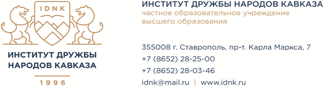

ЧАСТНОЕ ОБРАЗОВАТЕЛЬНОЕ УЧРЕЖДЕНИЕ ВЫСШЕГО ОБРАЗОВАНИЯ «ИНСТИТУТ ДРУЖБЫ НАРОДОВ КАВКАЗА ОБЪЯВЛЯЕТ КОНКУРС
на замещение должностей профессорско-преподавательского состава
В целях реализации статьи 332 Трудового Кодекса Российской Федерации, во исполнении Положения о порядке замещения должностей педагогических работников, относящихся к профессорско-преподавательскому составу, утвержденным Приказ Минобрнауки России от 23.07.2015 № 749 Об утверждении положения о порядке замещения должностей педагогических работников, относящихся к профессорско-преподавательскому составу, на основании приказа от 12.04.2021 № 18-од «Об объявлении конкурса на замещение должностей педагогических работников, относящихся к профессорско-преподавательскому составу ЧОУ ВО «ИДНК»,
объявлен конкурс на замещение должностей педагогических работников относящихся к профессорско-преподавательскому составу:
|
старший преподаватель |
- |
5,0 ставок |
|
доцент |
- |
5,5 ставок |
|
профессор |
- |
2,5 ставок |
в том числе по кафедрам:
|
кафедра административного права и процесса |
|
кафедра гражданского права и процесса |
|
кафедра журналистики |
|
кафедра конституционного и международного права |
|
кафедра международных отношений |
|
кафедра общей и прикладной психологии |
|
кафедра общенаучных дисциплин |
|
кафедра социально-культурного сервиса |
|
кафедра теологии |
|
кафедра теории и истории государства и права |
|
кафедра уголовного права |
|
кафедра уголовного процесса и криминалистики криминалистики |
|
кафедра экономики и управления |
Квалификационные требования определены «Единым квалификационным справочником должностей руководителей, специалистов и служащих» (утверждён приказом Министерства здравоохранения и социального развития Российской Федерации от 11.01.2011. № 1н).
Общие требования
Наличие высшего образования, направленность (профиль) которого соответствуют преподаваемому учебному курсу (при несоответствии - профессиональная переподготовка, направленность (профиль) которой соответствует преподаваемому учебному курсу.
Наличие повышения квалификации за последние три года по:
профилю преподаваемых дисциплин;
охране труда;
педагогической деятельности;
информационным технологиям.
Старший преподаватель
Высшее профессиональное образование и стаж научно-педагогической работы не менее 3 лет, при наличии ученой степени кандидата наук стаж научно-педагогической работы не менее 1 года.
Доцент
Высшее профессиональное образование, ученая степень кандидата (доктора) наук и стаж научно-педагогической работы не менее 3 лет или ученое звание доцента (старшего научного сотрудника).
Профессор
Высшее профессиональное образование, ученая степень доктора наук и стаж научно-педагогической работы не менее 5 лет или ученое звание профессора.
Место (адрес) приема заявления для участия в конкурсе
355008, Ставропольский край, г. Ставрополь, пр. К. Маркса, 7
отдел кадрового и правового обеспечения, кабинет 101
контактные телефоны +7(8652)28-25-00, +7(8652)28-38-37.
e-mail: Адрес электронной почты защищен от спам-ботов. Для просмотра адреса в вашем браузере должен быть включен Javascript.
График работы:
понедельник – пятница: с 9.00 до 18.00
суббота, воскресенье - выходные дни
Дата начала приема заявлений для участия в конкурсе 13.04.2021.
Дата окончания приема заявлений для участия в конкурсе 27.06.2021 (включительно)
Дата проведения конкурса 28.06.2021.
|
1. |
|
|
2. |
|
|
3. |
Анкета претендента для участия в конкурсном отборе (конкурсе) на должность ППС. |
|
4. |
|
|
5. |
|
|
6. |